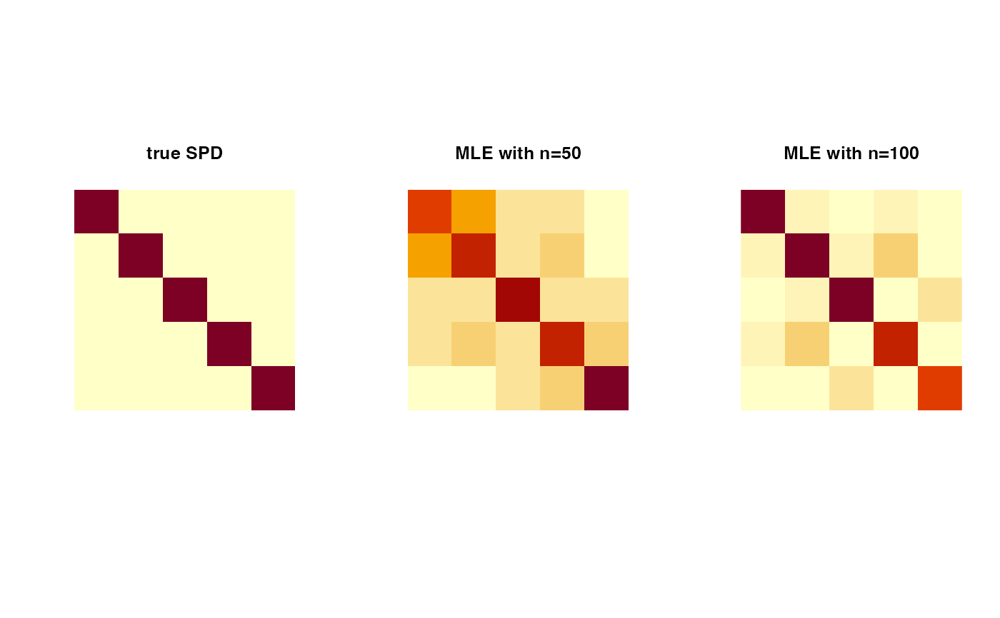

For a hypersphere \(\mathcal{S}^{p-1}\) in \(\mathbf{R}^p\), Angular Central Gaussian (ACG) distribution \(ACG_p (A)\) is defined via a density $$f(x\vert A) = |A|^{-1/2} (x^\top A^{-1} x)^{-p/2}$$ with respect to the uniform measure on \(\mathcal{S}^{p-1}\) and \(A\) is a symmetric positive-definite matrix. Since \(f(x\vert A) = f(-x\vert A)\), it can also be used as an axial distribution on real projective space, which is unit sphere modulo \(\lbrace{+1,-1\rbrace}\). One constraint we follow is that \(f(x\vert A) = f(x\vert cA)\) for \(c > 0\) in that we use a normalized version for numerical stability by restricting \(tr(A)=p\).
dacg(datalist, A) racg(n, A) mle.acg(datalist, ...)
| datalist | a list of length-\(p\) unit-norm vectors. |
|---|---|
| A | a \((p\times p)\) symmetric positive-definite matrix. |
| n | the number of samples to be generated. |
| ... | extra parameters for computations, including
|
dacg gives a vector of evaluated densities given samples. racg generates
unit-norm vectors in \(\mathbf{R}^p\) wrapped in a list. mle.acg estimates
the SPD matrix \(A\).
Tyler DE (1987). “Statistical analysis for the angular central Gaussian distribution on the sphere.” Biometrika, 74, 579--589. doi: 10.1093/biomet/74.3.579 .
Mardia KV, Jupp PE (1999-jan). Directional Statistics. John Wiley \& Sons, Inc., Hoboken, NJ, USA. ISBN 978-0-470-31697-9 978-0-471-95333-3, doi: 10.1002/9780470316979 .
# ------------------------------------------------------------------- # Example with Angular Central Gaussian Distribution # # Given a fixed A, generate samples and estimate A via ML. # ------------------------------------------------------------------- ## GENERATE AND MLE in R^5 # Generate data Atrue = diag(5) # true SPD matrix sam1 = racg(50, Atrue) # random samples sam2 = racg(100, Atrue) # MLE Amle1 = mle.acg(sam1) Amle2 = mle.acg(sam2) # Visualize opar <- par(no.readonly=TRUE) par(mfrow=c(1,3), pty="s") image(Atrue[,5:1], axes=FALSE, main="true SPD") image(Amle1[,5:1], axes=FALSE, main="MLE with n=50") image(Amle2[,5:1], axes=FALSE, main="MLE with n=100")